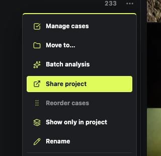
ProjectsOrganize by project
Click the plus next to “Projects” on the left to create one; the “…” to the right of a project lets you manage its cases.
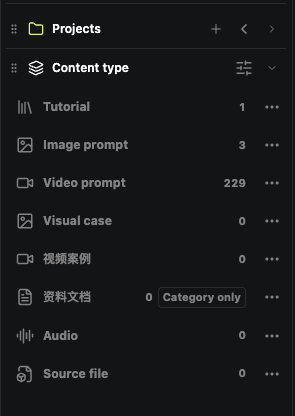
TypeFind by content type
Expand “Content type” on the left and click image prompts, video or documents.
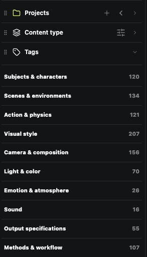
TagsFind by tag
Expand “Tag filter” and click a theme, style or color tag to narrow things down.
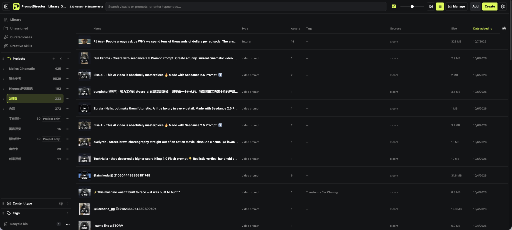
ViewSwitch how you browse
The picture icon and the list icon at the top switch between masonry and list.
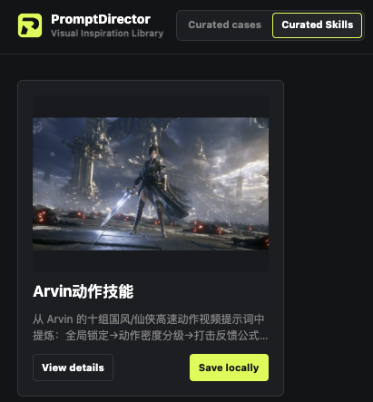
SaveDownload curated Skills
On the “Curated Skills” page, click “Save locally”; you can then use it in the composer.
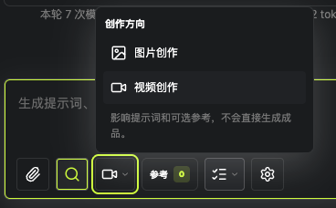
DirectionChoose image or video
Open “Creation direction” at the bottom of the composer and choose image creation or video creation.
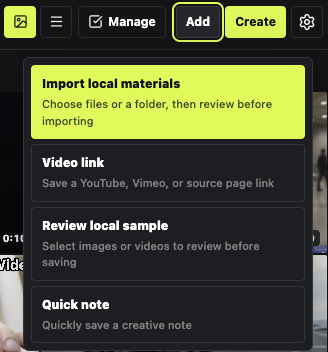
AddImport local files
“Add” in the top-right of the case library imports files, saves video links or writes a quick note.
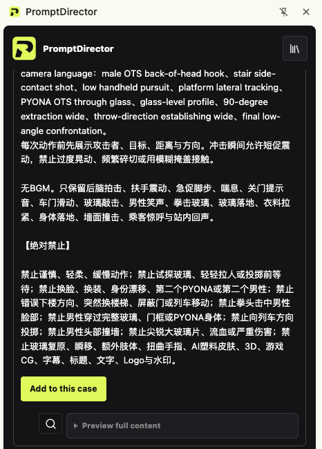
Add inWhen the prompt is in the comments
Capture the work first, then add the prompt from the comments to the current case, and check it before saving.
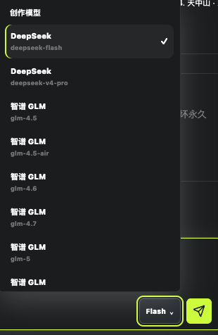
ModelSwitch the creation model
Next to the composer's send button you can switch between connected models.
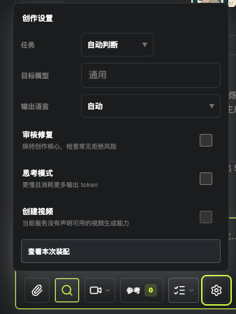
TaskAdjust this round of creation
Click the gear next to the input box to choose the task, the output language and more.
 Method
MethodCustomize the creation method
Settings → “Analysis & creation rules” → “Creation method”, and edit as needed.
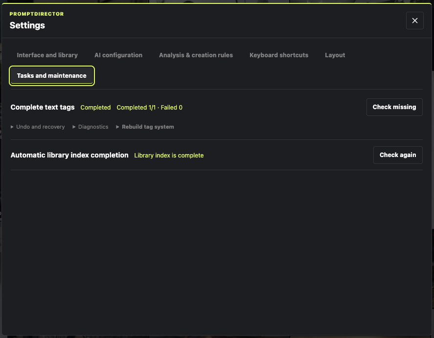
TagBackfill text tags for older cases
In Settings → “Tasks & maintenance”, check how many are pending, then decide whether to start.